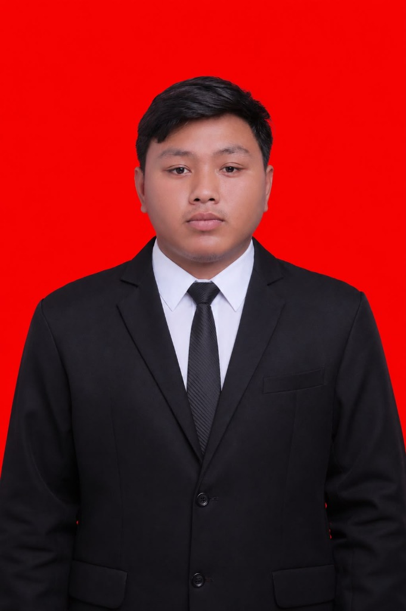

Lulusan Universitas Abulyatama dengan keahlian mendalam di bidang Artificial Intelligence, Machine Learning Pipeline, Deep Learning (Computer Vision & NLP), serta integrasi aplikasi modern. Telah menyelesaikan program akselerasi berstandar industri dengan 15+ sertifikasi terverifikasi.
Sertifikasi Dicoding
Modul Industri Selesai
Proyek AI & Web

Kombinasi antara pemahaman teoritis machine learning dan implementasi praktis berbasis kode yang siap dideploy.
Saya adalah seorang Machine Learning Engineer yang berdedikasi dan lulusan dari Universitas Abulyatama. Saya memiliki minat besar dalam mentransformasi data mentah menjadi wawasan berharga dan mengembangkan sistem kecerdasan buatan yang mampu memberikan dampak nyata.
Saya terpilih dan sukses lulus dari program bergengsi Coding Camp powered by DBS Foundation (Februari - Juli 2025) dengan spesialisasi Machine Learning Engineer. Dalam program ini, saya menuntaskan lebih dari 289 jam pembelajaran intensif, mencakup pemrograman Python tingkat lanjut, Data Processing, Machine Learning terapan, Deep Learning, MLOps, hingga Capstone Project.
Fokus utama saya meliputi pengembangan model klasifikasi & regresi, deteksi objek & citra dengan Convolutional Neural Network (CNN), sistem rekomendasi cerdas, pemrosesan bahasa alami (NLP), serta arsitektur pipeline MLOps otomatis.
Supervised, Unsupervised learning, evaluasi metrik, dan hyperparameter tuning.
Image classification menggunakan EfficientNetB1, MobileNetV2, dan TensorFlow.
Text preprocessing, TF-IDF, stress detection dari chat, dan model sentimen.
Eksperimen tracking dengan MLflow, integrasi API, Streamlit, dan Next.js.
Teknologi, pustaka, dan perangkat yang saya gunakan dalam merancang arsitektur AI dan perangkat lunak.
Koleksi proyek Machine Learning, Computer Vision, NLP, dan Web Application yang saya kembangkan.
Sistem AI inovatif untuk mendeteksi tingkat stres individu secara otomatis berdasarkan analisis sentimen teks dan pola percakapan chat. Dikembangkan sebagai proyek akhir Capstone DBS Coding Camp.
Aplikasi Computer Vision berbasis Streamlit untuk mengidentifikasi dan mengklasifikasikan jenis penyakit kulit pada kucing secara akurat menggunakan transfer learning arsitektur EfficientNetB1 dan MobileNetV2.
Platform interaktif berbasis Machine Learning yang membantu calon mahasiswa memilih program studi perguruan tinggi yang paling sesuai dengan menganalisis nilai akademik, minat, bakat, serta potensi pribadi.
Aplikasi web fullstack modern untuk manajemen absensi mahasiswa KKN, dilengkapi sistem autentikasi, dashboard analitik admin, manajemen kehadiran real-time, dan fitur ekspor rekap laporan format PDF.
Model klasifikasi prediktif untuk mendiagnosis risiko Chronic Kidney Disease (CKD) berbasis data klinis pasien, mencakup penanganan data hilang, normalisasi fitur, dan optimasi performa model klasifikasi.
Pipeline otomatisasi preprocessing data dan validasi skema dataset (Diabetes dataset) dengan penerapan prinsip MLOps, tracking artefak model, serta integrasi Continuous Integration (CI).
Penerapan algoritma Content-Based Filtering dan Collaborative Filtering untuk merekomendasikan judul film yang relevan dengan selera penonton menggunakan perhitungan Cosine Similarity.
Pipeline pengolahan bahasa alami untuk mengklasifikasikan polaritas sentimen ulasan teks secara otomatis, melibatkan tahapan text cleaning, stopword removal, stemming, dan vectorization (TF-IDF).
Daftar sertifikasi kompetensi resmi terverifikasi dari Dicoding Indonesia dan DBS Foundation.
Spesialisasi: Machine Learning Engineer (Periode: 10 Feb 2025 – 16 Jul 2025)
No Sertifikat: CC25/GRAD/XXV-07/MC423D5Y2006 • Institusi: Universitas Abulyatama
Total Jam Belajar
Program akselerasi talenta IT sangat selektif hasil kolaborasi DBS Foundation dan Dicoding Indonesia untuk mempersiapkan tenaga kerja siap industri. Menuntaskan 14 modul spesialisasi meliputi logika algoritma, Applied Machine Learning, Deep Learning, SQL, visualisasi data, hingga pengembangan soft skills.
Penerapan model machine learning pada tahap produksi dengan membuat dan mengimplementasikan prinsip MLOps menggunakan MLflow.
Verifikasi di DicodingPenerapan machine learning dengan real-world projects mulai dari predictive analytics, sentiment analysis, dan sistem rekomendasi.
Verifikasi di DicodingMenyiapkan dan memproses data untuk proyek data science dan machine learning menggunakan Python, SQL, dan PostgreSQL.
Verifikasi di DicodingBerbagai penerapan deep learning mulai dari klasifikasi gambar dan teks, time series, sistem rekomendasi, hingga Generative AI.
Verifikasi di DicodingDasar machine learning dengan fokus materi supervised learning, unsupervised learning, hingga teknik meningkatkan performa model.
Verifikasi di DicodingBerbagai konsep dasar analisis data beserta tahapannya, dilengkapi pembahasan studi kasus komprehensif menggunakan Python.
Verifikasi di DicodingDasar bahasa Python hingga library populer yang menjadi landasan utama data science, machine learning, dan back-end development.
Verifikasi di DicodingKonsep dasar SQL mulai dari relasional basis data, perancangan tabel, manipulasi data (DML), hingga query analitik.
Verifikasi di DicodingTeknik representasi data secara visual yang efektif untuk menceritakan insight dan mempresentasikan data secara komunikatif.
Verifikasi di DicodingPemahaman fundamental terkait Artificial Intelligence dan subbidang AI mencakup Machine Learning serta Deep Learning.
Verifikasi di DicodingVersion control modern menggunakan Git dan GitHub, manajemen branch, pull request, serta kolaborasi tim pengembang software.
Verifikasi di DicodingLogika-logika dasar dalam pemrograman, jenis logika alur program, gerbang logika, hingga computational thinking pemecahan masalah.
Verifikasi di DicodingTahapan menjadi pengembang software profesional dari perancangan arsitektur, modifikasi kode perangkat lunak, hingga dokumentasi teknis.
Verifikasi di DicodingSiklus hidup manajemen proyek, metodologi Agile/Scrum, alokasi sumber daya, mitigasi risiko teknis, dan timeline eksekusi.
Verifikasi di DicodingKelas literasi finansial profesional untuk peserta Coding Camp Powered by DBS Foundation 2025.
Verifikasi di DicodingRiwayat pendidikan formal dan program akselerasi kompetensi profesional.
Membangun fondasi komputasi yang kokoh, algoritma pemrograman, matematika terapan, rekayasa perangkat lunak, dan riset teknologi berbasis kecerdasan buatan.
Program pelatihan intensif berstandar industri dengan fokus Machine Learning, Deep Learning, MLOps, dan Capstone Project. Menyelesaikan 14 kurikulum komprehensif dengan capaian nilai sangat memuaskan di bawah bimbingan mentor Dicoding & DBS Foundation.
Menyelesaikan rangkaian kelas profesional terakreditasi mulai dari Machine Learning Terapan, Sistem MLOps, Fundamental Deep Learning, Pemrosesan Data, Visualisasi Data, hingga Manajemen Proyek Software.
Tertarik mendiskusikan peluang kerja, proyek AI, atau kolaborasi penelitian? Silakan hubungi saya melalui kanal di bawah ini.
Saya terbuka untuk posisi Machine Learning Engineer, Data Scientist, atau kolaborasi proyek rekayasa kecerdasan buatan.
github.com/Mansurgayo
Mansur • Machine Learning Engineer
Indonesia • Siap Bekerja Remote / Onsite